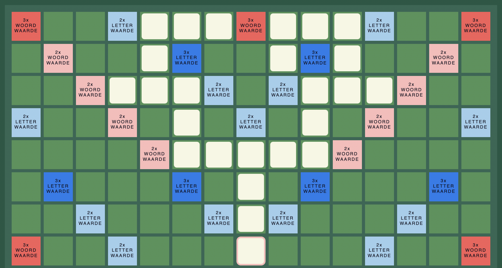
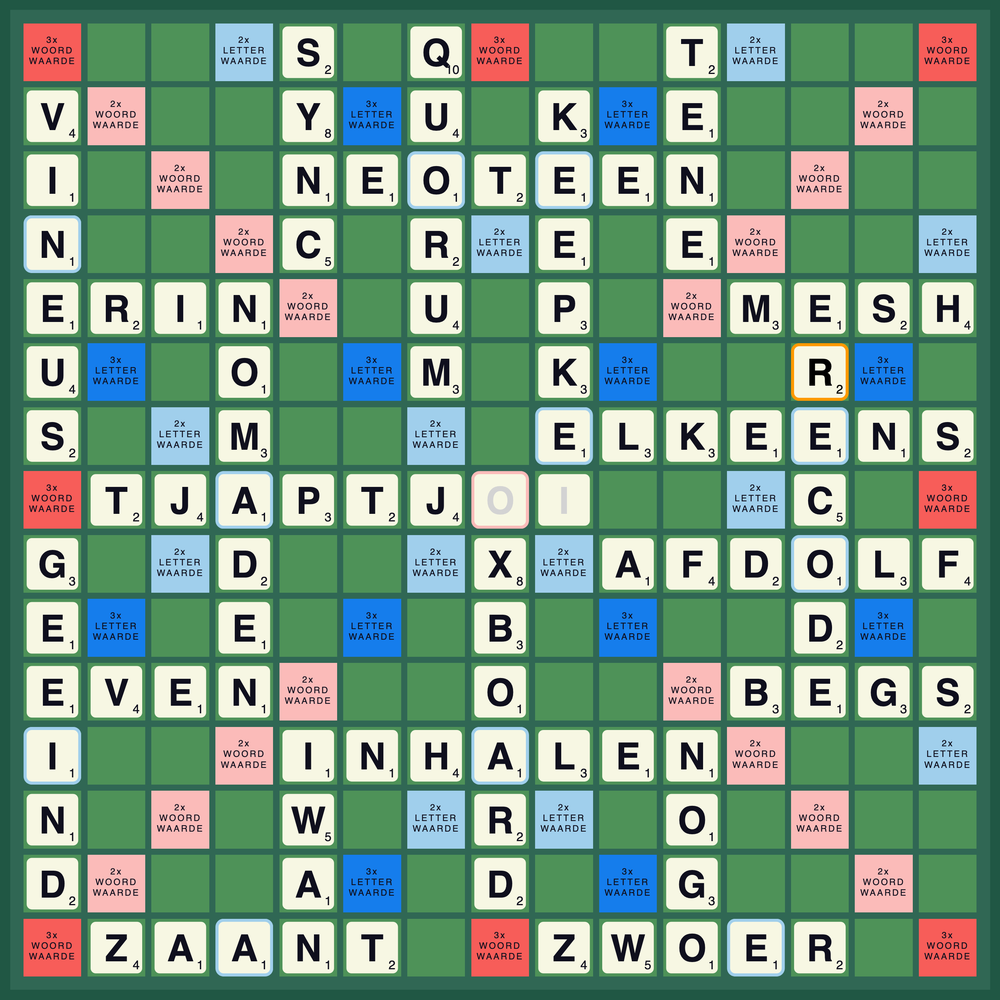

Mijn vader speelt bridge op hoog niveau. Ik zie hem nog zitten: met zijn voeten om de stoelpoten gekruld en een uitdrukking die geenszins informatie prijsgeeft aan zijn tegenspelers. Hij speelt perfect, dat is hoe hij Nederlands kampioen is geworden, en hoe hij spelletjes tegen zijn negenjarige zoon speelt.
Winnen moet je verdienen. Dus speelde ik schaak, Rummikub of Monopoly meestal in m’n eentje, ter voorbereiding. Als ik dan een geniale strategie had bedacht daagde ik mijn vader weer eens uit. Om er vervolgens achter te komen dat hij de koningin niet zo bewoog als ik had bedacht. Ik kan me niet herinneren dat ik ooit gewonnen heb.
Ook Scrabble kun je solitair spelen. Je probeert dan elke beurt zoveel mogelijk punten te halen totdat alle tegeltjes helemaal op zijn. Ook als negenjarige maakte ik het mezelf graag onnodig moeilijk: Hoe weinig punten kun je halen als je precies zelf mag kiezen welke tegeltjes je krijgt? Een leuke puzzel, die ik als dertiger perfect oploste. Je denkt misschien, waarom zo weinig mogelijk en niet zoveel mogelijk? Geen zorgen, zo veel mogelijk punten heb ik in een ander hoofdstuk uitgewerkt.
Laten we beginnen. Alle tegeltjes samen hebben een totale score van 230 punten. Dat is veel minder dan een speler gemiddeld haalt. Naast de dubbele en driedubbele woordwaardes die extra punten opleveren telt een tegeltje in een nieuw woord gewoon weer mee. Alleen het eerste woord wordt zonder dubbele punten neergelegd. Alle woorden daarna worden aangelegd aan een bestaand woord, waardoor minstens één tegel opnieuw meetelt in de puntentelling. Om zo min mogelijk punten te halen moeten we zorgen dat deze ‘dubbele’ tegel een zo laag mogelijke letterwaarde heeft.
Ook moeten we rekening houden met de regel dat je 50 bonuspunten scoort wanneer je al je tegels tegelijkertijd legt. Om zo min mogelijk punten te behalen kunnen we dus maximaal 6 tegels in één beurt leggen, om zo altijd minstens één tegel over te houden en de bonuspunten te vermijden. Er zijn in totaal 102 steentjes inclusief 2 blanco’s. Met 6 tegels per beurt moeten er dus minstens 17 beurten gespeeld worden.
Blanco’s hebben geen letterwaarde, dat is interessant. Het is een goede strategie om de blanco’s in een tweeletterwoord als eerste woord te spelen. Als eerste omdat dit woord gelegd moet worden op een plek met dubbelwoordwaarde. En 2 maal 0 is nog steeds 0. Daarnaast worden punten bespaard bij de woorden die worden aangelegd. Normaal telt de letter die in het nieuwe woord gebruikt wordt nogmaals mee, maar omdat de blanco geen punten heeft tellen alleen de aangelegde letters.
We gaan er dus vanuit dat alle tegels (in totaal 230 punten) in minimaal 17 beurten gelegd worden. Elke beurt na de eerste levert minimaal één extra punt op, doordat aan een bestaand woord aangelegd wordt. Ténzij je aan een blanco aan kan leggen, dat kan maximaal 2 keer. Dat betekent dat we sowieso 230 (tegels) + 16 (vervolgbeurten) – 2 (aanleggen aan een blanco) = 244 punten behalen.
Deze minimale waarde kan alleen gehaald worden als de dubbele en driedubbele woord- en letterwaardes worden vermeden, , en dat is zo makkelijk nog niet. Deze puntenkanonnen zijn diagonaal verdeeld over het bord, waardoor er als het ware vier driehoekige kwadranten ontstaan. Vanuit het midden kunnen er woorden in een kwadrant gelegd worden, maar eenmaal in het kwadrant ben je beperkt door de grenzen gevormd door tegels met dubbele en driedubbele woord- en letterwaardes.
Gezien er 102 tegels zijn zal elk kwadrant 25 tegels moeten bevatten. Maak je één kwadrant dunner bevolkt? Dan zal een andere er meer moeten krijgen.

In de figuur kun je zien dat er veel kleine woordjes gespeeld moeten worden om de puntentegels te vermijden. Maar extra beurten betekent ook weer meer punten doordat de tegel waaraan wordt aangelegd meetelt. Het is hier beter om in plaats van 2 keer een drieletterwoord en 1 keer een tweeletterwoord (zie figuur) 1 keer een zesletterwoord te leggen en een 2 keer letterwaarde te incasseren. Als de tegel op de 2 keer letterwaarde één punt waard is, spaar je daarmee één punt uit.
Nu komt eerst een puzzel die enkel gaat over de layout van de tegels. Elke keer als we een dubbelletterwaarde incasseren krijgen één extra punt. En we krijgen voor ieder extra woord een punt door het aanleggen. Wat is dan de layout die het goedkoopst is?
Vier tegels aanleggen zonder kosten kan op vier plekken op het bord. Daarvoor heb je namelijk vijf aaneengesloten lege velden nodig. Spot je ze? Dit lijkt misschien een goed beginpunt, maar er is een probleem. Als je eenmaal dat woord hebt neergelegd zit je vast. Je moet dan of hele korte woordjes aanleggen. Of meerdere dubbeleletterwaardes kruisen om het kwadrant op te vullen. Uiteindelijk is dit duurder.
Die plekken dus gelaten kun je als je maar één punt wilt uitgeven maximaal drie tegels aanleggen. Als je twee punten wilt incasseren kun je zes tegels aanleggen op best een aantal plekken. Kijk bijvoorbeeld naar de onderstaande tweemaalletterwaarde. Je zou misschien zeggen twee punten voor zes tegels, of één punt voor drie tegels. Wat maakt het uit? Maar de aangegeven tweemaalletterwaarde kan twee keer worden gebruikt, horizontaal en verticaal. En bij het tweede zes- of vijfletterwoord telt hij niet meer! Zo winnen dus net één puntje ten opzichte van steeds drie letters aanleggen. Omdat we het tweede vijfletterwoord voor maar één punt krijgen, een hele goede deal.
Dit truukje kunnen we tweemaal doen aan de blanco's vast. Één keer horizontaal, en één keer verticaal. De andere 2 richtingen zouden natuurlijk een twaalf letterwoord maken, dus dat gaat niet lukken. Daarnaast kunnen we nog twee vierletterwoorden neerleggen (1 punt per 3 steentjes). En daarna past zelfs dat niet meer. En is het beste wat we kunnen doen een zesletterwoord voor twee punten aan de rand van het bord. twee punten, voor vijf steentjes dus. Dat levert 28 steentjes op in het kwadrant. Meer dan voldoende!
Voor de andere twee kwadranten moeten we nu wel beginnen op een tweemaalletterwaarde. De gratis opening is onbruikbaar door de andere twee kwadranten. Doen we dat dan is het ineens niet meer handig om dezelfde tweemaalletterwaarde te gebruiken als hiervoor. Omdat we er net naast zitten. Er kan dus niet een woord meer zowel horizontaal als verticaal doorheen. De handigste layout is nu dit.
Combineren we dit alles en zoeken we precies woorden uit die inderdaad op alle plekken tegels van één punt hebben dan komen we op de volgende oplossing! We verliezen 11 extra punten door dubbellettertegels en 19 door onze beurten. Allemaal met tegels van 1 punt. Daardoor scoren we 260 punten in totaal. Alle woorden staan in de officiële Scrabble-lijst.
% TODO uitleggen dat er dus alleen 1-letter tegels op bepaalde plekken moeten % en welke dat dan zijn

Hiermee heb ik mijn zelfbedachte tegenstander toch flink ingemaakt!